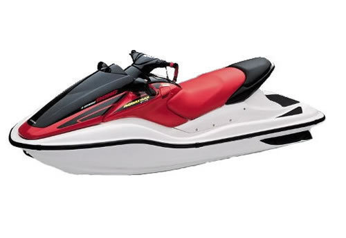

| Honda Aquatrax F-12 service manual repair 2003-2007 ARX1200 2-Seat PWC | |
| Instant download of the factory repair manual for 2003-2007 Honda Aquatrax 2-seat personal watercraft. 458 pages. | |
 |
| Honda Aquatrax F-12 service manual repair 2004-2007 ARX1200 3-Seat PWC | |
 |
Instant download of the factory repair manual for 2004-2007 Honda Aquatrax 3-seat personal watercraft. 497 pages. |
|
| Honda Aquatrax F-15 service manual repair 2008-2009 ARX1500 PWC | |
| Instant download of the factory repair manual for the 2008-2009 Honda Aquatrax F-15 3-seat personal watercraft. 504 pages. | |
|